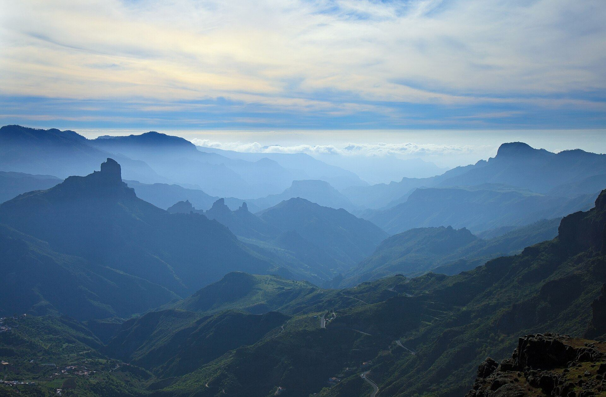

Explora Gran Canaria
Gran Canaria en camper: lugares que no te puedes perder
Miradores que cortan la respiración, pueblos con siglos de historia, dunas, piscinas naturales y rincones que casi nadie conoce. Todos caben en un mismo viaje si tu casa lleva ruedas.
Inicio › Explora Gran Canaria
La guía camper de la isla
Los imprescindibles, contados para viajar sobre ruedas
Hemos reunido los rincones más espectaculares de la isla —los mismos que recomienda Turismo de Gran Canaria— y les hemos añadido lo que nadie te cuenta: cómo llegar con una camper, dónde conviene aparcar, cuánto tiempo darle a cada sitio y en qué momento del día están en su mejor versión.
Lugares imprescindibles
19 rincones que justifican el viaje
Del nivel del mar a los 2.000 metros. Ordenados a nuestra manera: empezando por los que no perdonaríamos que te perdieras.
Dudas de ruta
Preguntas frecuentes del viaje en camper
Créditos fotográficos
Las fotografías de los lugares proceden de Wikimedia Commons y se usan bajo sus licencias libres: